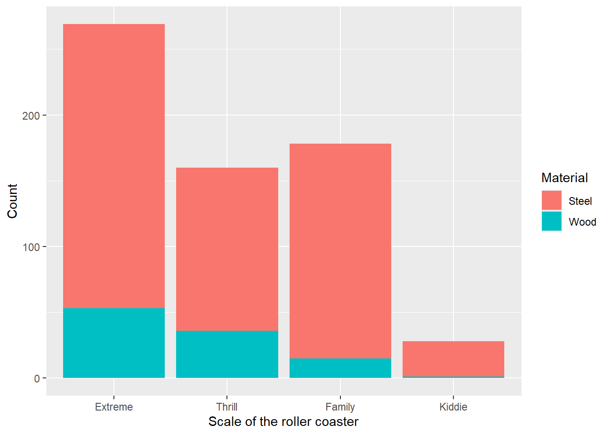
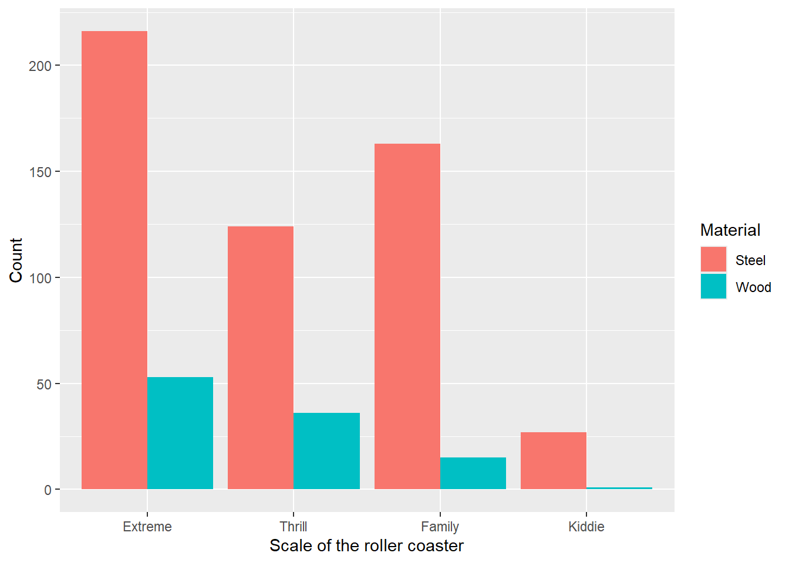

# API key: 020bec21c3dd48a4b5485d44cbffd92fST558_Homework5_Haverhals
Task 1 - Querying an API and a Tidy-Style Function
1.
To get started, I wanted to put my API key somewhere handy.
Now, I’ll make my request to API to see if I can find information related to recent political polls.
library(httr)
poll_info<-GET("https://newsapi.org/v2/everything?q=polls&from=2026-08-20&language=en&pageSize=50&apiKey=020bec21c3dd48a4b5485d44cbffd92f")2.
Next, we’re asked to parse what we just received:
library(jsonlite)Warning: package 'jsonlite' was built under R version 4.5.3parsed <- fromJSON(rawToChar(poll_info$content))
print("Total results=")[1] "Total results="parsed[[2]][1] 5007head(parsed[[3]],5) source.id source.name author
1 <NA> Gizmodo.com Ece Yildirim
2 bbc-news BBC News https://www.facebook.com/bbcnews
3 bbc-news BBC News https://www.facebook.com/bbcnews
4 bbc-news BBC News https://www.facebook.com/bbcnews
5 <NA> NPR The Associated Press
title
1 TikTok Is Supercharging Comments With Voice, Photo Carousels, and Polls
2 Close race in Sweden as hard right eyes role in government
3 German far-right set for big win in eastern state - exit polls
4 The Papers: 'Military jet tripped chaos' and 'A failure for dying people'
5 German exit polls suggest far-right party has big lead in regional election
description
1 So much of TikTok lives in the comment section, the company is basically building a site within its site.
2 Prime Minister Ulf Kristersson has promised cabinet jobs for the Sweden Democrats, but the rival left-wing bloc has a narrow lead in the polls.
3 Germany's AfD has hailed a "historic result" and is projected to win 44.5% of the vote, far ahead of the conservative CDU on 18.5%.
4 Several of the papers consider on the fall of the assisted dying bill in the House of Commons on Friday.
5 The Alternative for Germany party has a strong lead in a regional election, but it is unclear if it will be able to form Germany's's first far-right state government since WWII, exit polls indicate.
url
1 https://gizmodo.com/tiktok-is-supercharging-comments-with-voice-photo-carousels-and-polls-2000806865
2 https://www.bbc.co.uk/news/articles/cwyz8dn5nn3o
3 https://www.bbc.co.uk/news/articles/cy4zejgz3z9o
4 https://www.bbc.co.uk/news/articles/c0qx7q25d9xo
5 https://www.npr.org/2026/09/06/nx-s1-5955677/german-exit-polls-suggest-far-right-party-big-lead-in-regional-election
urlToImage
1 https://gizmodo.com/app/uploads/2026/07/Best-VPN-for-TikTok-1200x675.jpg
2 https://ichef.bbci.co.uk/ace/branded_news/1200/cpsprodpb/3cfc/live/fe574770-add8-11f1-bc1f-3f186ca4140c.png
3 https://ichef.bbci.co.uk/ace/branded_news/1200/cpsprodpb/1a2d/live/537ff930-6139-11ee-b101-6f93d6dfbcc2.png
4 https://ichef.bbci.co.uk/ace/branded_news/1200/cpsprodpb/0608/live/eb82adc0-ae2c-11f1-933b-b9c22df145d4.png
5 https://npr.brightspotcdn.com/dims3/default/strip/false/crop/3376x1899+0+176/resize/1400/quality/85/format/jpeg/?url=http%3A%2F%2Fnpr-brightspot.s3.amazonaws.com%2F87%2F2b%2F18c9cb3346b3b36ea5ce83575239%2Fap26249325207672.jpg
publishedAt
1 2026-09-03T18:55:05Z
2 2026-09-12T00:56:47Z
3 2026-09-06T16:10:46Z
4 2026-09-12T00:52:08Z
5 2026-09-06T16:36:48Z
content
1 TikTok just announced a major revamp of one of the platform’s most frequently used features: the comment section. TikTok users will now be able to share 60-second voice notes and polls as comments.\r\n… [+2504 chars]
2 Sweden's left- and right wing political blocs are in a tight race in Sunday's general election, with current conservative Prime Minister Ulf Kristersson promising cabinet jobs for hard-right allies i… [+1428 chars]
3 Germany's AfD is heading for a big victory in the eastern state of Saxony-Anhalt, far ahead of its mainstream arrivals, exit polls say. It is not yet clear if that would be enough to take power in th… [+955 chars]
4 Image caption, Reform UK has received a record £36m donation, the Telegraph reports. It writes that the donation, which was from cryptocurrency billionaire Ben Delo, is a "game-changing gift" for the… [+275 chars]
5 MAGDEBURG, Germany The Alternative for Germany party has a strong lead in a regional election, but it is unclear whether it will be able to form the country's first far-right state government since W… [+1950 chars]Here, we can see the list mentioned in the “R console” picture that shows that the status is “OK”, 4,962 articles were returned from the search and that the third item in the list is the (49x8) data frame.
3.
Now, to write a function to query the API. Note that I got help from Google on how to allow spaces in the x character string.
search<-function(x,y,z){
x <- URLencode(as.character(x))
url<-paste0("https://newsapi.org/v2/everything?q=",as.character(x),"&from=",as.character(y),"&language=en&pageSize=50&apiKey=",as.character(z))
search_results<-GET(url)
search_parsed <- fromJSON(rawToChar(search_results$content))
search_parsed
}Now, to try it:
search_1<-search("polls","2026-08-20","020bec21c3dd48a4b5485d44cbffd92f")
print("Total results")[1] "Total results"search_1[[2]][1] 5007head(search_1[[3]],5) source.id source.name author
1 <NA> Gizmodo.com Ece Yildirim
2 bbc-news BBC News https://www.facebook.com/bbcnews
3 bbc-news BBC News https://www.facebook.com/bbcnews
4 bbc-news BBC News https://www.facebook.com/bbcnews
5 <NA> NPR The Associated Press
title
1 TikTok Is Supercharging Comments With Voice, Photo Carousels, and Polls
2 Close race in Sweden as hard right eyes role in government
3 German far-right set for big win in eastern state - exit polls
4 The Papers: 'Military jet tripped chaos' and 'A failure for dying people'
5 German exit polls suggest far-right party has big lead in regional election
description
1 So much of TikTok lives in the comment section, the company is basically building a site within its site.
2 Prime Minister Ulf Kristersson has promised cabinet jobs for the Sweden Democrats, but the rival left-wing bloc has a narrow lead in the polls.
3 Germany's AfD has hailed a "historic result" and is projected to win 44.5% of the vote, far ahead of the conservative CDU on 18.5%.
4 Several of the papers consider on the fall of the assisted dying bill in the House of Commons on Friday.
5 The Alternative for Germany party has a strong lead in a regional election, but it is unclear if it will be able to form Germany's's first far-right state government since WWII, exit polls indicate.
url
1 https://gizmodo.com/tiktok-is-supercharging-comments-with-voice-photo-carousels-and-polls-2000806865
2 https://www.bbc.co.uk/news/articles/cwyz8dn5nn3o
3 https://www.bbc.co.uk/news/articles/cy4zejgz3z9o
4 https://www.bbc.co.uk/news/articles/c0qx7q25d9xo
5 https://www.npr.org/2026/09/06/nx-s1-5955677/german-exit-polls-suggest-far-right-party-big-lead-in-regional-election
urlToImage
1 https://gizmodo.com/app/uploads/2026/07/Best-VPN-for-TikTok-1200x675.jpg
2 https://ichef.bbci.co.uk/ace/branded_news/1200/cpsprodpb/3cfc/live/fe574770-add8-11f1-bc1f-3f186ca4140c.png
3 https://ichef.bbci.co.uk/ace/branded_news/1200/cpsprodpb/1a2d/live/537ff930-6139-11ee-b101-6f93d6dfbcc2.png
4 https://ichef.bbci.co.uk/ace/branded_news/1200/cpsprodpb/0608/live/eb82adc0-ae2c-11f1-933b-b9c22df145d4.png
5 https://npr.brightspotcdn.com/dims3/default/strip/false/crop/3376x1899+0+176/resize/1400/quality/85/format/jpeg/?url=http%3A%2F%2Fnpr-brightspot.s3.amazonaws.com%2F87%2F2b%2F18c9cb3346b3b36ea5ce83575239%2Fap26249325207672.jpg
publishedAt
1 2026-09-03T18:55:05Z
2 2026-09-12T00:56:47Z
3 2026-09-06T16:10:46Z
4 2026-09-12T00:52:08Z
5 2026-09-06T16:36:48Z
content
1 TikTok just announced a major revamp of one of the platform’s most frequently used features: the comment section. TikTok users will now be able to share 60-second voice notes and polls as comments.\r\n… [+2504 chars]
2 Sweden's left- and right wing political blocs are in a tight race in Sunday's general election, with current conservative Prime Minister Ulf Kristersson promising cabinet jobs for hard-right allies i… [+1428 chars]
3 Germany's AfD is heading for a big victory in the eastern state of Saxony-Anhalt, far ahead of its mainstream arrivals, exit polls say. It is not yet clear if that would be enough to take power in th… [+955 chars]
4 Image caption, Reform UK has received a record £36m donation, the Telegraph reports. It writes that the donation, which was from cryptocurrency billionaire Ben Delo, is a "game-changing gift" for the… [+275 chars]
5 MAGDEBURG, Germany The Alternative for Germany party has a strong lead in a regional election, but it is unclear whether it will be able to form the country's first far-right state government since W… [+1950 chars]So, it looks like a few more articles have been published between when I queried directly when I got the function working. Let’s try a few more times:
search_2<-search("Dolly Parton","2026-08-20","020bec21c3dd48a4b5485d44cbffd92f")
print("Total results")[1] "Total results"search_2[[2]][1] 3988head(search_2[[3]],5) source.id source.name author
1 <NA> Gizmodo.com Matt Novak
2 bbc-news BBC News <NA>
3 bbc-news BBC News https://www.facebook.com/bbcnews
4 bbc-news BBC News <NA>
5 bbc-news BBC News https://www.facebook.com/bbcnews
title
1 Dolly Parton’s Sister Asks People to Stop Posting AI Slop of the Legendary Singer
2 Dolly Parton: The life of a legendary country singer
3 The Papers: 'We will always love you, Dolly'
4 Watch Nashville fans lay flowers in tribute
5 Dolly Parton: The country legend who sang from the heart
description
1 "I hope nobody can ever replicate me or what I do. AI is a scary thing," said Dolly Parton in 2023.
2 Iconic country musician Dolly Parton has died at the age of 80, her family announced on her social media.
3 The death of country music legend and philanthropist Dolly Parton at aged 80 dominates Wednesday's papers.
4 The BBC's Helena Humphrey is outside the Country Music Hall of Fame where fans gathered to mourn Dolly Parton.
5 The singer, songwriter and actress is known for timeless hits including Jolene and I Will Always Love You.
url
1 https://gizmodo.com/dolly-partons-sister-asks-people-to-stop-posting-ai-garbage-of-the-legendary-singer-2000808660
2 https://www.bbc.co.uk/news/videos/c7831ld8e73o
3 https://www.bbc.co.uk/news/articles/c1wxnn50yero
4 https://www.bbc.co.uk/news/videos/cx2zm89zd99o
5 https://www.bbc.co.uk/news/articles/cz9xdl4g25zo
urlToImage
1 https://gizmodo.com/app/uploads/2026/09/dolly-parton-1992-1200x675.jpg
2 https://ichef.bbci.co.uk/ace/branded_news/1200/cpsprodpb/5cb3/live/731513a0-a0b2-11f1-aed2-8d6da8d75094.jpg
3 https://ichef.bbci.co.uk/ace/branded_news/1200/cpsprodpb/70b9/live/a06e53b0-a0d1-11f1-a291-b542ee92de7c.jpg
4 https://ichef.bbci.co.uk/ace/branded_news/1200/cpsprodpb/b497/live/4599c0a0-a117-11f1-a291-b542ee92de7c.jpg
5 https://ichef.bbci.co.uk/ace/branded_news/1200/cpsprodpb/9edd/live/72b74780-4963-11f1-a87a-55dfd3c7a311.jpg
publishedAt
1 2026-09-08T18:45:26Z
2 2026-08-25T18:27:22Z
3 2026-08-25T22:35:45Z
4 2026-08-26T06:37:30Z
5 2026-08-25T18:14:13Z
content
1 The internet was flooded with countless tributes to Dolly Parton after her death on Aug. 25 at the age of 80 years old. But some of the images, videos, and songs that have been distributed online are… [+4790 chars]
2 Iconic country musician Dolly Parton has died at the age of 80, her family announced on her social media. "Sadness lies with us, not with Dolly," Parton's nephew Brian Seaver said in a video announce… [+79 chars]
3 Image caption, The Guardian features Parton in her own words, saying: "I always wanted to be a star. I just seemed natural to me." Elsewhere, the paper's other top story says Prime Minister Andy Burn… [+162 chars]
4 The BBC's Helena Humphrey visited the Country Music Hall of Fame in Nashville, Tennessee, on Tuesday evening as fans gathered to mourn Dolly Parton. The country music star died at the age 80 after a … [+75 chars]
5 Despite being unable to read sheet music, Parton played several instruments including the banjo, harp, piano and saxophone.\r\nShe had her first number one hit - and first Grammy nomination - with the … [+1194 chars]And
search_3<-search("Kyler Murray","2026-08-20","020bec21c3dd48a4b5485d44cbffd92f")
print("Total results")[1] "Total results"search_3[[2]][1] 1125head(search_3[[3]],5) source.id source.name author
1 bbc-news BBC News Ben Collins
2 fox-sports Fox Sports <NA>
3 <NA> Daily Norseman Christopher Gates
4 <NA> New Atlas Mike McRae
5 <NA> NBCSports.com Myles Simmons
title
1 Bears, Bills and Ravens win on record-breaking Sunday
2 Kyler Murray Departs First Vikings Start After Taking Hit To head
3 Kyler Murray Injured Against Packers
4 Nearly all NFL players may die with a chronic brain injury
5 Kyler Murray ruled out with concussion
description
1 After kicking off the NFL season with a Super Bowl rematch and a trip to Australia, week one continued with a record-breaking Sunday.
2 Kyler Murray's debut with the Minnesota Vikings might have come to an abrupt end on Sunday.
3 It didn’t look good
4 It’s NFL season again. In the Minnesota Vikings’ first game of the season, quarterback Kyler Murray’s debut run made it just 11 plays before a violent shoulder to the right side of his helmet sent him to the turf.Continue ReadingCategory: Alzheimer's & Dement…
5 Murray sustained a hard blow to the head while sliding on a scramble in the first quarter.
url
1 https://www.bbc.co.uk/sport/american-football/articles/c86x5pq12e6o
2 https://www.foxsports.com/stories/nfl/kyler-murray-hit-head-vikings-injury-updates
3 https://www.dailynorseman.com/minnesota-vikings-news/99025/kyler-murray-injured-against-packers
4 https://newatlas.com/brain/alzheimers-dementia/nfl-players-chronic-brain-injury/
5 https://www.nbcsports.com/nfl/profootballtalk/rumor-mill/news/kyler-murray-ruled-out-with-concussion
urlToImage
1 https://ichef.bbci.co.uk/ace/branded_sport/1200/cpsprodpb/8c18/live/086f5950-afe6-11f1-a540-61c3f7fc4e6c.png
2 https://a57.foxsports.com/statics.foxsports.com/www.foxsports.com/content/uploads/2026/09/1294/728/kyler-murray.jpg?ve=1&tl=1
3 https://s.yimg.com/lo/mysterio/api/f9a7eff60deee69a48424632eff43ed63b7950378c0e214b1aedd2f7b76656ec/lightyear_networkapi/resizefill_w1200%3Bquality_80%3Bformat_webp/https%3A%2F%2Fmedia.zenfs.com%2Fen%2Fsb_nation_articles_115%2Fed8d96222df16b9c79ac0711cff5a212.jpg
4 https://assets.newatlas.com/dims4/default/1ab2870/2147483647/strip/true/crop/2000x1050+0+100/resize/1200x630!/quality/90/?url=https%3A%2F%2Fnewatlas-brightspot.s3.ap-southeast-2.amazonaws.com%2F85%2Fc6%2Faf75cf73489fb8b14a7d272eac65%2Fnfl-concussions.jpg&na.image_optimisation=0
5 https://nbcsports.brightspotcdn.com/dims4/default/d5a6b67/2147483647/strip/true/crop/5704x3209+0+103/resize/1440x810!/quality/90/?url=https%3A%2F%2Fnbc-sports-production-nbc-sports.s3.us-east-1.amazonaws.com%2Fbrightspot%2F01%2Fb8%2Fd4e538d14ae4bc3f1a3334db652b%2F2295108498.jpg
publishedAt
1 2026-09-14T05:36:07Z
2 2026-09-13T21:08:45Z
3 2026-09-13T21:05:34Z
4 2026-09-15T14:35:02Z
5 2026-09-13T21:22:00Z
content
1 The Arizona Cardinals have been tipped by many to finish with the NFL's worst record, while the Los Angeles Chargers are seen as play-off contenders.\r\nBut the Chargers were humbled on their own turf … [+916 chars]
2 Kyler Murray's debut with the Minnesota Vikings came to an abrupt end on Sunday.\r\nThe Vikings quarterback exited in the middle stages of the first quarter of Sunday's game against the Green Bay Packe… [+799 chars]
3 The 2026 season opener didn't get off to a great start for the Minnesota Vikings, and it didn't get much better midway through the first quarter with a very scary moment involving the Vikings' starti… [+1111 chars]
4 Its NFL season again. In the Minnesota Vikings first game of the season, quarterback Kyler Murrays debut run made it just 11 plays before a violent shoulder to the right side of his helmet sent him t… [+3877 chars]
5 Kyler Murray will not return to Sundays season opener. \r\nThe Vikings announced Murray has been downgraded to out with a concussion.\r\nMurray sustained a hard, illegal blow to the head midway through t… [+539 chars]Task 2 - Summarizing Roller Coaster Data
Basic EDA
To begin this task, I went to the url provided and downloaded the file to our working directory. Because I haven’t yet, I’ll next load the tidyverse and readr packages.
Now, we’ll pull the data into R:
raw_coasters<-read_csv("data/635USrollercoasters.csv")Rows: 635 Columns: 21
── Column specification ────────────────────────────────────────────────────────
Delimiter: ","
chr (12): Coaster, Park, City, State, Census Region, AgeGroup, Scale, Type, ...
dbl (9): Year Opened, TopSpeed, MaxHeight, Drop, Length, Duration, # of Inv...
ℹ Use `spec()` to retrieve the full column specification for this data.
ℹ Specify the column types or set `show_col_types = FALSE` to quiet this message.str(raw_coasters)spc_tbl_ [635 × 21] (S3: spec_tbl_df/tbl_df/tbl/data.frame)
$ Coaster : chr [1:635] "Adrenaline Peak" "Adventure Express" "Afterburn" "Aftershock" ...
$ Park : chr [1:635] "Oaks Amusement Park" "Kings Island" "Carowinds" "Silverwood Theme Park" ...
$ City : chr [1:635] "Portland" "Mason" "Charlotte" "Athol" ...
$ State : chr [1:635] "Oregon" "Ohio" "North Carolina" "Idaho" ...
$ Census Region : chr [1:635] "West" "Midwest" "South" "West" ...
$ Year Opened : num [1:635] 2018 1991 1999 2008 2010 ...
$ AgeGroup : chr [1:635] "3:Newest" "2:Recent" "2:Recent" "3:Newest" ...
$ TopSpeed : num [1:635] 45 35 62 65.6 22 67 35 66 48 50 ...
$ MaxHeight : num [1:635] 72 63 113 192 25 ...
$ Scale : chr [1:635] "Extreme" "Thrill" "Extreme" "Extreme" ...
$ Type : chr [1:635] "Steel" "Steel" "Steel" "Steel" ...
$ Design : chr [1:635] "Sit Down" "Sit Down" "Inverted" "Inverted" ...
$ Drop : num [1:635] 70 47 110 177 22.5 170 20 147 80 144 ...
$ Length : num [1:635] 1050 2963 2956 1204 628 ...
$ Duration : num [1:635] 66 140 167 92 47 190 100 143 110 110 ...
$ Inversions? : chr [1:635] "Yes" "No" "Yes" "Yes" ...
$ # of Inversions: num [1:635] 3 0 6 3 0 6 0 0 0 4 ...
$ Make : chr [1:635] "Gerstlauer Amusement Rides GmbH" "Arrow Dynamics" "Bolliger & Mabillard" "Vekoma" ...
$ Latitude : num [1:635] 45.5 39.4 35.3 47.9 28 ...
$ Longitude : num [1:635] -122.7 -84.3 -80.8 -116.7 -82.6 ...
$ Boundary : chr [1:635] "{\"type\":\"Feature\",\"properties\":{\"CENSUSAREA\":95988.013,\"NAME\":\"Oregon\",\"GEO_ID\":\"0400000US41\",\"| __truncated__ "{\"type\":\"Feature\",\"properties\":{\"CENSUSAREA\":40860.694,\"NAME\":\"Ohio\",\"GEO_ID\":\"0400000US39\",\"L"| __truncated__ "{\"type\":\"Feature\",\"properties\":{\"CENSUSAREA\":48617.905,\"NAME\":\"North Carolina\",\"GEO_ID\":\"0400000"| __truncated__ "{\"type\":\"Feature\",\"properties\":{\"CENSUSAREA\":82643.117,\"NAME\":\"Idaho\",\"GEO_ID\":\"0400000US16\",\""| __truncated__ ...
- attr(*, "spec")=
.. cols(
.. Coaster = col_character(),
.. Park = col_character(),
.. City = col_character(),
.. State = col_character(),
.. `Census Region` = col_character(),
.. `Year Opened` = col_double(),
.. AgeGroup = col_character(),
.. TopSpeed = col_double(),
.. MaxHeight = col_double(),
.. Scale = col_character(),
.. Type = col_character(),
.. Design = col_character(),
.. Drop = col_double(),
.. Length = col_double(),
.. Duration = col_double(),
.. `Inversions?` = col_character(),
.. `# of Inversions` = col_double(),
.. Make = col_character(),
.. Latitude = col_double(),
.. Longitude = col_double(),
.. Boundary = col_character()
.. )
- attr(*, "problems")=<externalptr> Looking over the structure, I see that Census Region, AgeGroup, Scale, Type, Design, and Inversions? should be treated as factors.
unique(raw_coasters$`Census Region`)[1] "West" "Midwest" "South" "Northeast"unique(raw_coasters$AgeGroup)[1] "3:Newest" "2:Recent" "1:Older" unique(raw_coasters$Scale)[1] "Extreme" "Thrill" "Family" "Kiddie" unique(raw_coasters$Type)[1] "Steel" "Wood" unique(raw_coasters$Design)[1] "Sit Down" "Inverted" "Bobsled" "Suspended" "Wing" "Flying"
[7] "Stand Up" unique(raw_coasters$`Inversions?`)[1] "Yes" "No" Now, to create the factors:
coasters<-raw_coasters|>
select(-Latitude,-Longitude,-Boundary)|>
mutate(CensusRegionF=factor(`Census Region`,levels=c("West","Midwest","South","Northeast")))|>
mutate(AgeGroup=case_match(AgeGroup,"3:Newest"~"Newest","2:Recent"~"Recent","1:Older"~"Older"))|>
mutate(AgeGroupF=factor(AgeGroup,levels=c("Newest","Recent","Older")))|>
mutate(ScaleF=factor(Scale,levels=c("Extreme","Thrill","Family","Kiddie")))|>
mutate(TypeF=factor(Type,levels=c("Steel","Wood")))|>
mutate(DesignF=factor(Design,levels=c("Sit Down","Inverted","Bobsled","Suspended","Wing","Flying","Stand Up")))|>
mutate(InversionsF=factor(`Inversions?`,levels=c("Yes","No")))|>
select(-`Census Region`,-AgeGroup,-Scale,-Type,-Design,-`Inversions?`)Warning: There was 1 warning in `mutate()`.
ℹ In argument: `AgeGroup = case_match(...)`.
Caused by warning:
! `case_match()` was deprecated in dplyr 1.2.0.
ℹ Please use `recode_values()` instead.4.
Now that we have some cleaned up data, we can look at it to verify that everything is looking good:
coasters# A tibble: 635 × 18
Coaster Park City State `Year Opened` TopSpeed MaxHeight Drop Length
<chr> <chr> <chr> <chr> <dbl> <dbl> <dbl> <dbl> <dbl>
1 Adrenaline P… Oaks… Port… Oreg… 2018 45 72 70 1050
2 Adventure Ex… King… Mason Ohio 1991 35 63 47 2963
3 Afterburn Caro… Char… Nort… 1999 62 113 110 2956
4 Aftershock Silv… Athol Idaho 2008 65.6 192. 177 1204
5 Air Grover Busc… Tampa Flor… 2010 22 25 22.5 628
6 Alpengeist Busc… Will… Virg… 1997 67 195 170 3828
7 Alpine Bobsl… Grea… Quee… New … 1998 35 64 20 1490
8 American Eag… Six … Gurn… Illi… 1981 66 127 147 4650
9 American Thu… Six … Eure… Miss… 2008 48 82 80 2713
10 Anaconda King… Dosw… Virg… 1991 50 128 144 2700
# ℹ 625 more rows
# ℹ 9 more variables: Duration <dbl>, `# of Inversions` <dbl>, Make <chr>,
# CensusRegionF <fct>, AgeGroupF <fct>, ScaleF <fct>, TypeF <fct>,
# DesignF <fct>, InversionsF <fct>All seems pretty reasonable to me.
5.
Next, to look for missing variables. For this, I’ll steel the function from the notes.
sum_na <- function(column){
sum(is.na(column))
}
na_counts <- coasters |>
summarize(across(everything(), sum_na))|>
select(where(~ .x > 0))
na_counts# A tibble: 1 × 6
TopSpeed MaxHeight Drop Length Duration Make
<int> <int> <int> <int> <int> <int>
1 74 8 128 33 66 36sum(na_counts)[1] 345It looks like there are 6 columns with missing data, good for a total of 345 missing values.
Categorical Variables
6.
Nest, we’re to create some contingency tables with the factors we created aboce. First, a one-way table:
table(coasters$ScaleF)
Extreme Thrill Family Kiddie
269 160 178 28 From the table above, we can see that “Extreme” was the most numerous roller coaster in the data set, with a total of 269 roller coasters being of that type.
And a two-way table:
table(coasters$ScaleF, coasters$TypeF)
Steel Wood
Extreme 216 53
Thrill 124 36
Family 163 15
Kiddie 27 1Look at the table above, we see that most of the roller coasters are made of steel. In fact, 216 of the 269 Extreme coasters are made of stell.
And three-way:
table(coasters$ScaleF,coasters$TypeF,coasters$AgeGroupF), , = Newest
Steel Wood
Extreme 126 21
Thrill 79 11
Family 120 5
Kiddie 14 0
, , = Recent
Steel Wood
Extreme 82 23
Thrill 27 9
Family 37 3
Kiddie 9 0
, , = Older
Steel Wood
Extreme 8 9
Thrill 18 16
Family 6 7
Kiddie 4 1From this table, we can see that the dominance of steel roller coasters is a recent phenomenon. In fact, when we look at the Older category, we see that less than half of the Extreme roller coasters (8 out of 17) were made of steel.
7.
Next, we’ll create a two-way table, conditioned on a third variable, in two ways.
filtered_coasters <- filter(coasters, AgeGroupF == "Older")
table(filtered_coasters$ScaleF, filtered_coasters$TypeF)
Steel Wood
Extreme 8 9
Thrill 18 16
Family 6 7
Kiddie 4 1Now, to create the same table another way:
three_way<-table(coasters$ScaleF,coasters$TypeF,coasters$AgeGroupF)
three_way[,,3]
Steel Wood
Extreme 8 9
Thrill 18 16
Family 6 7
Kiddie 4 18.
Now, we’ll do the same thing with functions in dplr.
coasters|>
group_by(ScaleF,TypeF)|>
summarize(count=n())|>
pivot_wider(names_from=TypeF,values_from=count)# A tibble: 4 × 3
# Groups: ScaleF [4]
ScaleF Steel Wood
<fct> <int> <int>
1 Extreme 216 53
2 Thrill 124 36
3 Family 163 15
4 Kiddie 27 19.
Finally, we’ll create a stacked bar graph and a side-by side bar graph.
First, the stacked bar graph:
library(ggplot2)
ggplot(coasters, aes(x = ScaleF, fill = TypeF)) +
geom_bar()+
labs(x="Scale of the roller coaster",y="Count") +
scale_fill_discrete("Material")
Finally, the side-by-side:
ggplot(coasters, aes(x = ScaleF, fill = TypeF)) +
geom_bar(position="dodge")+
labs(x="Scale of the roller coaster",y="Count") +
scale_fill_discrete("Material")